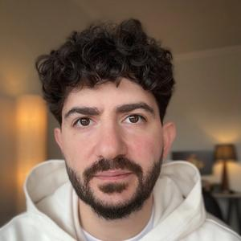

15 000 ₽/ 150 €
психолог онлайн12 лет опыта

Спиридон Оганесян
Помогаю строить близость без тревоги
Тут про близкие и счастливые отношения
- 12 лет опыта
- клинический психолог
- немецкое образование
01 консультация
Записаться на консультацию
02 каналы